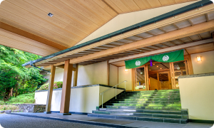
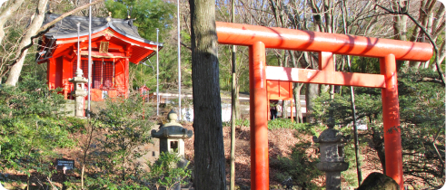
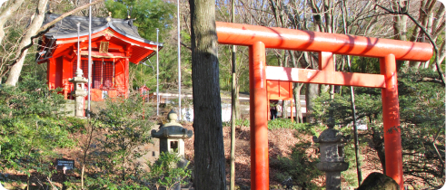
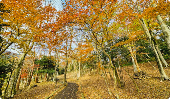

It is the perfect place to forget the hustle and
bustle of the city and enjoy a walk or run while experiencing nature
in each of the four seasons.
With the chirping of birds and the sound of the wind
as background music, we pursue good health
from within through gentle exercise.

Start!!
Guests staying at the Ryuguden.
Hakone Komagatake ropeway (Hakone-en) ride and entrance to
forest of Hakone Kuzuryu-no-Mori will incur a fee.
of Hakone Kuzuryu-no-Mori ～ Entrance to Kutouryu no Mori
- Walking: approx. 25 min
- Run: 13 min
- 
Start!!
Guests staying at The Prince Hakone Ashinoko
Guests start
Hakone Komagatake ropeway (Hakone-en) ride and entrance
to forest of Hakone Kuzuryu-no-Mori will incur a fee.
Mori-Therapy Road ～ Entrance
- Walk: approx. 20 min
- Run: 10 min

Hakone Kutouryu no Mori-
Therapy Road
This area is free of vehicular traffic.
There are ups and downs along the way.
Kuzuryu-no-Mori Entrance
- Walk: approx. 20 min
- Run: approx. 10 min
- Walk: approx. 40 min.
- Run: approx. 20 min.

-
 Step 1
Step 1Moto Hakone Entrance
-
 Step 2
Step 2Scenic spots along
the way -
Step 3
Forest of Hakone
Kuzuryu-no-Mori Entrance
Forest of Hakone
Kuzuryu-no-Mori
The popular power spot “Kuzuryu Shrine＆
Hakuryu Shrine” is about a 20-minute walk from
Hakone Kutouryu no Mori-Therapy Road-Moto
Hakone Entrance.
9:00A.M. 〜 5:00P.M. Last admission4:30P.M.
*Subject to change depending on the season.
Adult: ¥600
Children(4 years old to elementary school student): ¥300
-


-
 

- 
-

If you want to enjoy a longer distance
Hakone Shrine
Hakone Shrine is a famous shrine that has been revered since ancient
times as Kanto's chief guardian, Hakone Daigongen, and is believed to
be a god of luck with high divine virtues for traffic safety, fulfilling one's
wishes, and opening one's heart to good fortune and good luck.
- Walk: approx. 20 min.
- Run: approx. 10 min.
- Walk: approx. 15 min.
- Run: approx. 8 min.
is a lot of traffic.

After a walk or run...
A day trip to a hot spring with
a spectacular view
- Ryuguden -Honkan-
Weekdays 9:00A.M.~8:00P.M. (Last admission 7:00P.M.)
Weekends and holidays 8:00A.M.~8:00P.M. (Last admission at 7:00P.M.)
Ryuguden palace Guests 6:00A.M.~8:00P.M. (Last admission
7:00P.M.)
*Guests staying at The Prince Hakone Lake Ashinoko
Adults: ¥1,000
Children: ¥500(Towel rental is an additional charge)
Free (can be used before check-in and after check-out)
Information & Notes
*Fees will be charged for the ride on the Hakone Komagatake Ropeway (Hakone-en) and for admission to the Kutouryu no Mori (Kutouryu Forest).